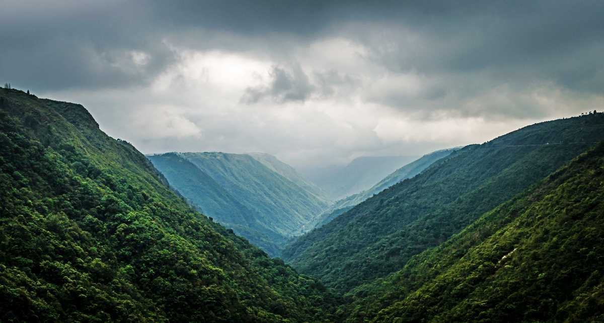
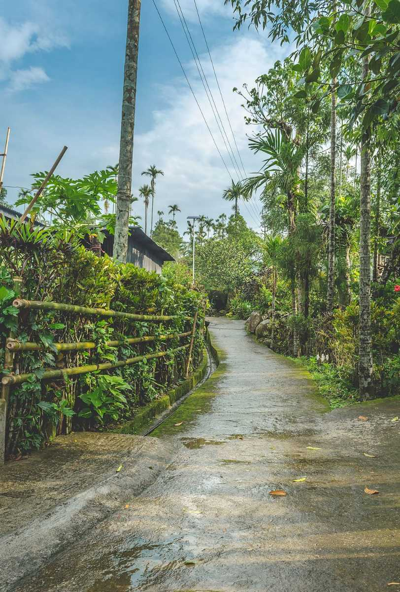
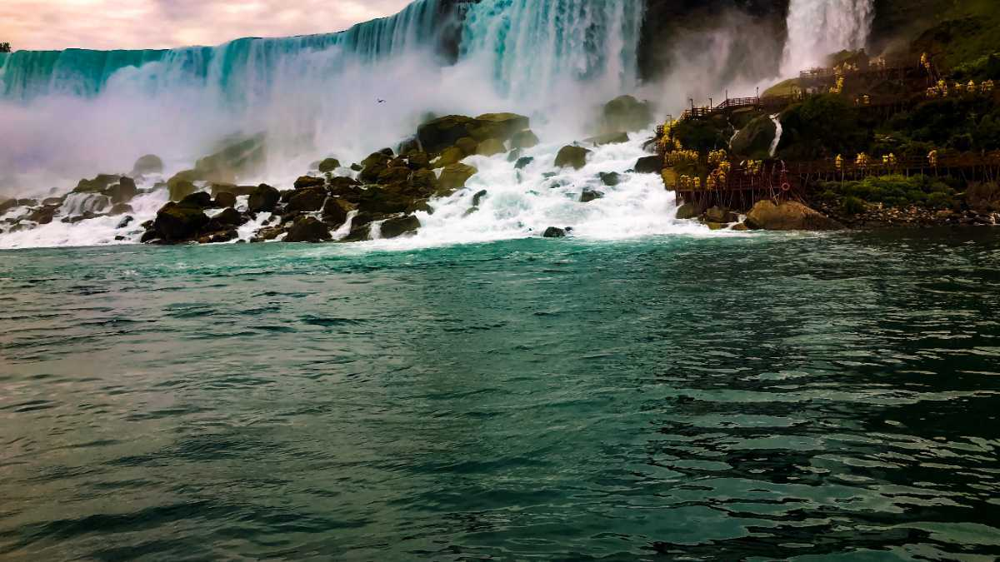

Nestled amidst the pine-clad hills, Shillong, the capital of Meghalaya, unfolds like a picturesque canvas at an elevation of 1496 meters. Revered as the 'Scotland of the East,' the city offers a delightful blend of captivating landscapes, pleasant weather, and rich traditions.

Hidden deep in the lush, green forests of the wettest place in India: Cherrapunjee, Meghalaya; one can find the magnificent Jingkieng Nongriat Double Decker Living Root Bridge; more commonly known as the Umshiang Double Decker Living Root Bridge or simply just the Double Decker Root Bridge.
Nestled amidst the misty hills of Meghalaya, Cherrapunji was once renowned as the wettest place on Earth. Located approximately 50 kilometers from Shillong, this sub-divisional town boasts a rich tapestry of flora and natural wonders.
Umiam Lake, a mesmerizing man-made reservoir, is located at a distance of 15 kilometres north of Shillong which is the capital of the north-eastern Indian state of Meghalaya. The lake was formed after a dam was constructed to generate hydroelectric power.

Mawsynram, situated in the East Khasi Hills district of Meghalaya, holds the distinction of being the wettest place on Earth. With its breathtaking landscapes and record-breaking rainfall, Mawsynram offers a unique destination for adventurous travelers.
The Umngot River, also referred to as the Dawki River or Wah Umngot, gracefully winds its way through the quaint town of Dawki, nestled at the base of the Jaintia Hills in the West Jaintia Hills district of Meghalaya, India.
Named after an Elephant like stone at its foot, the Elephant Falls are amongst the most popular falls in the North-East, situated next to Shillong. It is a tourists' paradise with three layers of the falls accessible to the layman from different vantage points.

Mawlynnong is a small village situated around 90 km from Shillong in the East Khasi Hills, Meghalaya and is also known as God's own Garden. It was declared as the cleanest village in Asia in 2003 by Discovery India which certainly which makes it one of the most popular tourist destinations in the Indian state.

Located in the Jaintia Hills district, Jowai located at a distance of 66 Kms from Shillong, is famous for its bucolic setting and breathtaking views with the perfect mix of heritage and culture.
Meghalaya is home to some amazing and mysterious cave systems and Mawsmai Cave is by far the most popular of the lot. Located just 6 km away from the heart of Cherrapunjee Mawsmai cave is a breathtaking maze of caves in the East Khasi Hills of Meghalaya.
Situated 287 kms south of Shillong at the Indo-Bangladesh Border, Baghmara is not only rich in flora and fauna but also boasts many small lakes, rivers and rolling hills. Flanked by the South Garo hills and fed by the Simsang river, this minute town is host to hordes of tourists every year.

Nestled near the Indo-Bangladesh Border, the Garo Hills form a majestic segment of the Patkai hill range, extending into both India and Myanmar. Named after the indigenous Garo tribe, these hills cover approximately 8,000 square kilometers, boasting lush subtropical forests teeming with rare endemic wildlife.